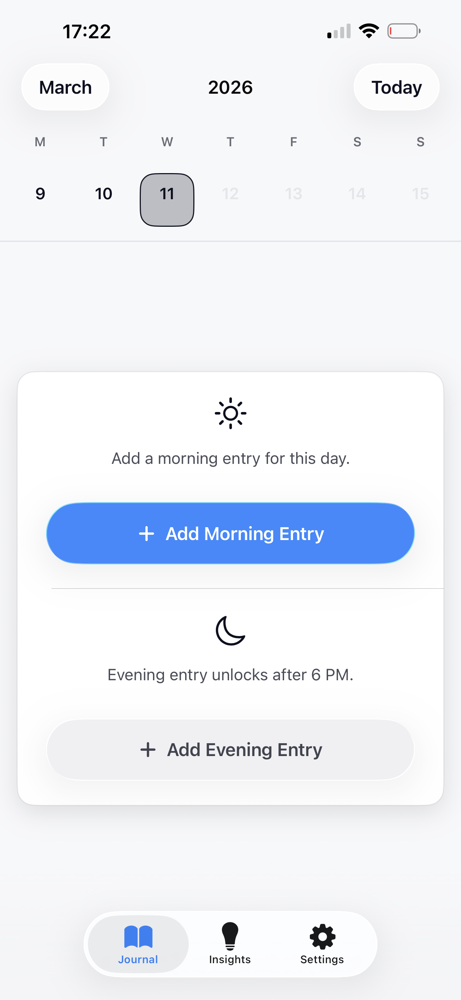
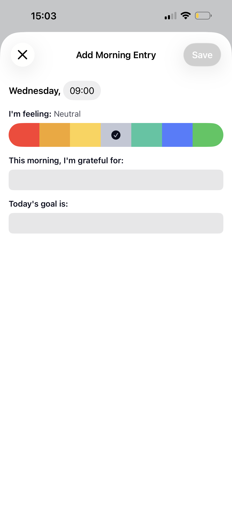
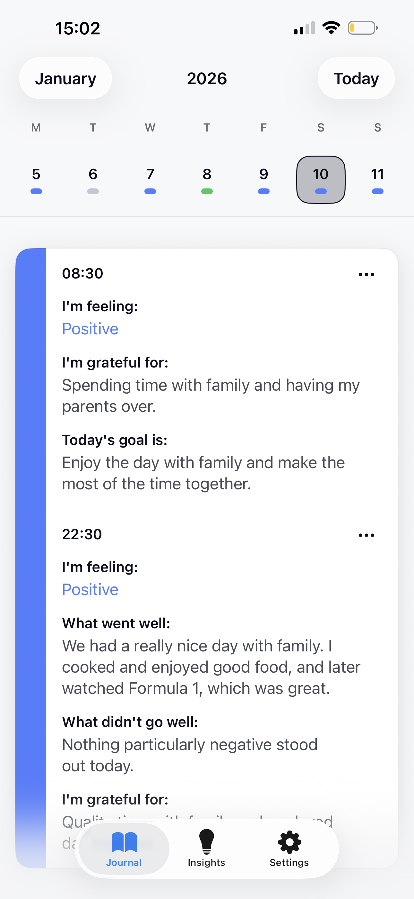
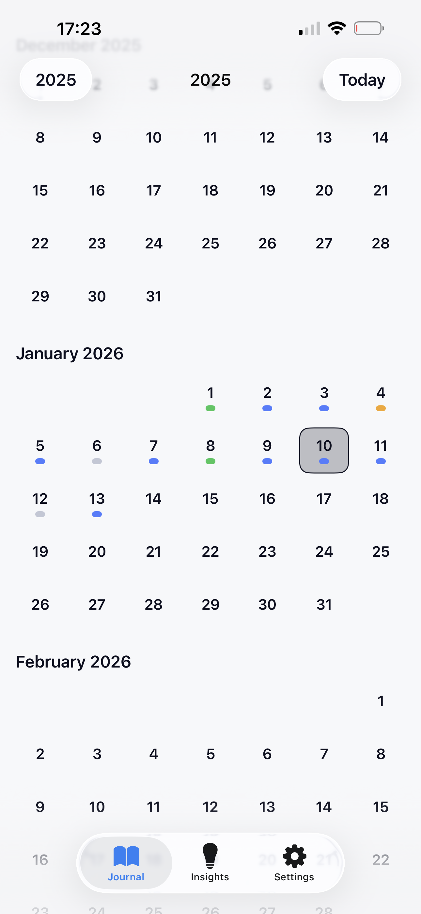
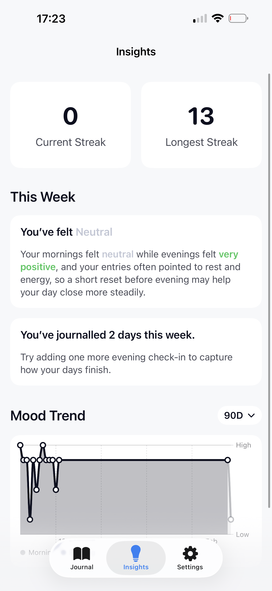
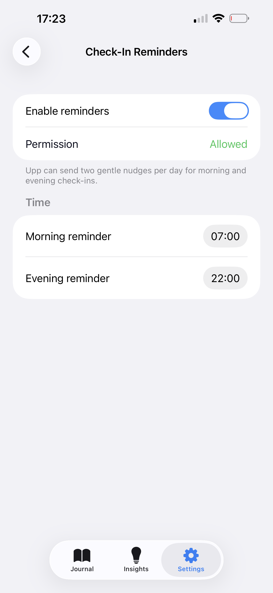

Build awareness through simple morning and evening reflection.
Morning entries focus on how you feel, gratitude, and what matters today. Evening entries help you revisit what went well, what felt difficult, and what deserves gratitude.
Upp is a calm mindfulness journal for morning and evening reflection. It helps people build awareness through short check-ins, a thoughtful journal history, and gentle weekly insights that make emotional patterns easier to notice.

Morning entries focus on how you feel, gratitude, and what matters today. Evening entries help you revisit what went well, what felt difficult, and what deserves gratitude.
The full feeling scale sits at the center of the product and gives each entry an emotional anchor without making the experience feel clinical or heavy.
Upp surfaces trends, streaks, and narrative observations in a human tone so people can notice change without wading through a dashboard.
Short check-ins, calm history views, and reflective insights come through best when the product speaks for itself.
The flow encourages consistency without guilt and keeps each reflection grounded in how the day actually feels.


The calendar view keeps past entries easy to revisit while still making the current day feel present and clear, whether you are scanning a week or moving across months.
Upp’s broader history view makes repeatable check-ins feel meaningful by showing the shape of your journaling across weeks and months.

Insights summarize patterns in a human tone, while reminder settings stay lightweight and respectful.


Join the waitlist for launch updates and early access to a more thoughtful way of reflecting on your days.
We’ve received your email and will let you know when early access opens.